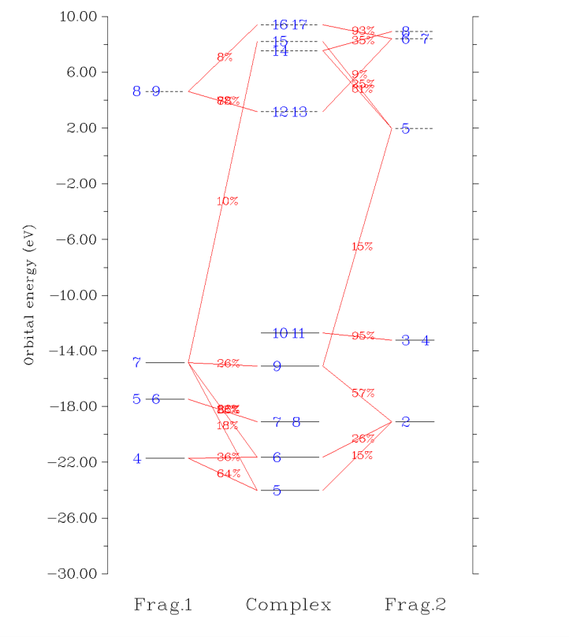

电荷分解分析与绘制轨道相互作用图（Charge decomposition analysis and plotting orbital¶
Multiwfn manual, p.240–246.英文原文见同名 English 章节。 Images:
../imgs/.
前五行的元素（Zr-Cd 除外）有 𝐶6,𝐴𝐴 free 值，其它元素值为零。
若只需体系中某些原子的上述数据，可先用选项 -5 定义原子列表，其它原子将不参与选项 13 的计算。
值得注意的是，若你在 Hirshfeld 或 Hirshfeld-I 方法中以手动提供原子波函数文件的方式构建原子权重函数，这些原子波函数文件与用于求 Vfree 的那些完全无关。前者须对应球化密度，后者无此要求。
用该功能的例子见 4.15.4 节。
3.19 电荷分解分析与绘制轨道相互作用图（Charge decomposition analysis and plotting orbital¶
interaction diagram (16)）（接上）¶
3.19.1 理论（Theory）¶
Dapprich 与 Frenking 提出的电荷分解分析（CDA）（J. Phys. Chem., 99, 9352 (1995)）用于深入理解配合物中片段间电荷如何转移以达到电荷平衡。CDA 的思想基于片段轨道（FO），即片段孤立状态的分子轨道（MO）。另外，一旦获得配合物 MO 中 FO 的成分，可直接绘制轨道相互作用图，从而直观、直接地理解片段轨道如何混合形成配合物轨道。
为简单，本节假设配合物只由两片段组成。CDA 也可直接用于多于两片段的情形。
片段轨道（Fragment orbitals） 假设研究配合物 AB，片段 A 的原子上有 NA 个基函数，片段 B 有 NB 个基函数，则配合物的每个 MO 将由 NA+NB 个基函数线性展开，同时配合物有 NA+NB 个 MO。用同样基组，保持与配合物中相同的几何，若分别算两片段，可得片段 A 的 NA 个 MO 与片段 B 的 NB 个 MO，它们统称为片段轨道（FO）。可把这些 FO 取为基函数来线性展开配合物的 MO。由于维数（基函数数）仍为 NA+NB，展开是精确的。换言之，我们等价地变换了基。
电荷分解分析（Charge decomposition analysis） 在 CDA 原文中，作者定义了三项：
其中 i 与 η 分别为配合物 MO 的序号与占据数。
,( )( )dm nmnSφφ= ∫rrr 为 FO m 与 FO n 间的重叠积分。注意虽然 NA 个与
NB 个 FO 分别为正交归一集，但 NA 集与 NB 集一般不正交，所以 S 不是单位矩阵。Cm,i 表示配合物 MO i 中 FO m 的系数。上标 "vir" 与 "occ" 分别意为虚（即未占据）与占据。
di 项表示经由配合物 MO i 从片段 A 施舍到 B 的电子量；
类似地，bi 项表示从 B 反馈到 A 的电子。事实上，ηiCm,iCn,iSm,n 可视为 MO i 中 FO m 与 n 间重叠布居的一半。因此，d 与 b 项的区别在于哪个片段把电子从其占据 FO 提供到另一片段的虚 FO。r 项揭示不同片段的两占据 FO 间的闭壳层相互作用；ri 取正值意味着由于 MO i，两片段的电子在重叠区积累而呈成键特征，取负值表示电子从重叠区耗尽从而反映电子排斥效应。全部 ri 项之和一般为负，因为填充轨道间的总体相互作用一般是排斥的。r 亦称“排斥极化”（repulsion polarization）项
注意虽然原文给的 CDA 公式正确，但仔细检查数据后笔者发现原文例子中的 d、b、r 项有误（数据应除以二）。
CDA 的推广（Generalization of CDA） 原始 CDA 定义有两个缺点。第一，它只适用于闭壳层情形（即配合物与每个片段都须闭壳层），从而当两片段以共价键结合时不能用。第二，在 post-HF 计算中，虽然配合物的 MO 可换为自然轨道（NO），FO 只能由 HF 或 DFT 计算产生，因为原始 CDA 公式没有显式考虑 FO 的占据数。
为克服原始定义的局限，在笔者的论文 J. Adv. Phys. Chem., 4, 111-124 (2015) (http://dx.doi.org/10.12677/JAPC.2015.44013) 中提出了广义 CDA，即 Multiwfn 的 CDA 模块中所用的形式：
在广义 CDA 中，配合物与片段的轨道可由 HF/DFT 或 post-HF 方法产生，分别对应 MO 与 NO。η𝑚 FO 表示
FO m 的占据数。对开壳层情形，ηref 为 1.0，CDA 对 α 自旋和 β
自旋分别进行；对前者，i 表示配合物的 α 轨道，m、n 遍历全部 α FO；对后者，i 表示配合物的 β 轨道，m、n 遍历全部 β FO。对闭壳层情形，ηref 为 2.0，m、n 遍历空间轨道。min() 为取两值最小的函数。算 t 时，若只对 η𝑚 FO 的情形累加，则所得 t 为 d；若只对 η𝑚 FO < η𝑛 FO 的情形，则 t 为 b。FO > η𝑛
对原始 CDA 适用的情形，广义形式算的 b 与 d 与原始定义所得完全相同；而 r 恰为原始定义所得的两倍。广义形式 r 中引入因子 2 的原因是，这样之后 r 有更明确的物理意义，即等于两片段占据 FO 间的重叠布居（亦称 Mulliken 键级）。
由于 CDA 已推广，下面 FO 表示片段的 MO 或 NO，“配合物轨道”表示配合物的 MO 或 NO。轨道可为自旋空间轨道（开壳层）或空间轨道（闭壳层）。
显然，d、b、r 项可分解为 FO 对贡献，Multiwfn 支持这种分解，极大方便了分析 FO 相互作用的本质。
配合物轨道中 FO 的成分与轨道相互作用图（Composition of FO in complex orbital and orbital interaction diagram） 用 3.10 节讨论的方法，可算配合物轨道中 FO 的成分。一般地，Mulliken 方法对此是最好选择，配合物轨道 i 中 FO m 的成分算为
注意由于 Mulliken 方法众所周知的缺点，有时出现负贡献。由于负值常不大，可直接视为零。另外，有时贡献略大于 100%，可直接视为 100%。也支持改用 SCPA 方法而非 Mulliken 方法算成分，只需把 settings.ini 中的“iCDAcomp”改为 2。SCPA 相对 Mulliken 的优点是成分永远不超过 100%，且总为正。但若 i 为高位虚轨道，算的成分可能不太合理。
由 Θ，可清楚理解每个配合物轨道如何由两片段的 FO 混合形成。进而可绘制轨道相互作用图以直观研究配合物轨道与 FO 的关系，即按能量对每个配合物轨道和 FO 画一条，再检查每个 Θ 以确定如何连线，如若 Θm,i 大于 5%，则 FO m 与配合物轨道 i 对应的两条将相连。于是，看图就直接知道 FO m 对配合物轨道 i 有重要贡献。
扩展电荷分解分析（ECDA）（Extended charge decomposition analysis (ECDA)） 施舍与反馈电子总数之差，即 d - b，可视为净转移电子。但在 J. Am. Chem. Soc., 128, 278 (2006) 中，作者认为该观点不正确，因为 b 与 d 项不仅表示电荷转移效应（CT），还表示电子极化效应（PL）；后者描述配合物形成中同片段的虚与占据 FO
混合引起的片段内电子分布调整，在算净转移电子时应排除。在该文中他们提出了扩展电荷分解分析（ECDA）方法，他们认为用它可更合理地算净转移电子数。
在 ECDA 观点中，可定义四项 1. PL(A) + CT(A→B) = 片段 A 的占据 FO 在配合物的全部虚轨道中的成分之和，乘以 Occ
-
PL(A) + CT(B→A) = 片段 A 的虚 FO 在配合物的全部占据轨道中的成分之和，乘以 Occ
-
PL(B) + CT(B→A) = 片段 B 的占据 FO 在配合物的全部虚轨道中的成分之和，乘以 Occ
-
PL(B) + CT(A→B) = 片段 B 的虚 FO 在配合物的全部占据轨道中的成分之和，乘以 Occ 其中 Occ 对开壳层与闭壳层情形分别为 1.0 与 2.0。
算出四项后，从片段 A 到 B 的净转移电子数可直接得为
CT(A→B) - CT(B→A) = [ PL(A) + CT(A→B) ] - [ PL(A) + CT(B→A) ] 配合物轨道的成分可用多种方法算，导致不同的 ECDA 结果。Multiwfn 用的方法与 ECDA 原文相同，即 Mulliken 方法。
注意 ECDA 既不能用于 post-HF 计算，也不能用于多于两片段的体系。用 SCPA 求轨道成分时 ECDA 也不能用。
按名字，ECDA 好像是 CDA 的扩展，但在笔者个人看来，ECDA 与 CDA 无关，它们的基本思想很不同，从而 ECDA 算的净转移电子与 CDA 的 d - b 完全不可比。另外，虽然 Multiwfn 实现了 ECDA，笔者认为这不是有用的方法。CDA 最显著的特征是电子转移可分解为配合物轨道的贡献，但 ECDA 做不到；ECDA 只能揭示两片段间转移了多少电子，但该量实际可用更直接的方法获得，即把片段中全部原子电荷求和算片段电荷，再减去片段孤立状态的净电荷。
3.19.2 输入文件（Input file）¶
只要有含配合物与全部片段基函数信息的文件，就可做 CDA 分析。如 2.5 节所述，此时 .mwfn、.fch、.gms、.molden 可用作输入文件。
输入文件应注意以下要求：(1) 算配合物与片段用的方法与基组须相同，否则结果无意义。例如，假设准备过渡金属配合物的 CDA 分析输入文件，若配合物计算用混合基组（如金属用 Lanl2TZ、配体用 6-31G），则片段计算中金属片段须用 Lanl2TZ，配体片段须用 6-31G。
(2) 各片段在其波函数文件中的坐标须与配合物波函数文件中的坐标完全相同。
为保证这点，最好先优化配合物（同时获得其波函数文件），再直接从优化后的配合物几何中取出各片段的坐标，分别写为单点任务的输入文件（算完后得到片段的波函数文件）。显然，片段绝不应优化，否则其坐标与配合物坐标不一致。
(3) 片段与配合物中的原子顺序须相同，即配合物中的实际原子顺序可由依次合并片段 1、2、3 ……中的原子得到
(4) 尽量避免用弥散函数！按笔者的经验，有弥散基函数时 CDA 结果常不合理乃至完全无意义。
"examples\CDA\COBH3_ORCA" 文件夹含 ORCA 3.0.1 产生的例子 .molden 文件，用于做 COBH3 体系的 CDA 分析。
对 Gaussian 用户的特别说明（Special notes for Gaussian users） 对 Gaussian 用户，应注意以下几点。
-
由于 Gaussian 自动把体系放在标准取向，为满足上述要求 (2)，计算中应用 nosymm 关键词以避免该处理。
-
若用混合基组，尤其涉及 Pople 型基组（如 6-31G*）时，最好在片段计算中指定 5d 关键词以迫使 Gaussian 对 d 壳层用球谐型基函数。
-
默认 Gaussian 自动删除线性相关的基函数，从而在某些情形（通常用弥散函数时）基函数数不等于轨道数，此时 CDA 不能做。用 IOp(3/32=2) 可避免该问题。
-
若配合物与片段计算用 post-HF，需按第 4 章开头所述步骤把自然轨道存入 .fch 文件。
单点任务的 Gaussian 输出文件也可用于 CDA 分析。所有情形都须用 nosymm pop=full，且配合物计算还应指定 IOp(3/33=1)。分子几何须用笛卡尔坐标给出。若要在 post-HF 级别做 CDA 分析，对闭壳层与开壳层情形分别不用 pop=full 而用 density pop=NO 与 density pop=NOAB，以输出自然轨道系数。
3.19.3 用法（Usage）¶
启动 Multiwfn 后，应先输入配合物文件的路径，再进入 CDA 模块。之后应设定片段数，再依次输入每个片段文件的路径。
对开壳层片段，将提示选择是否翻转其电子自旋。若选 "y"，则其 α 与 β 轨道的轨道信息交换。引入这步的原因很清楚：例如，要用 CDA 分解 CH3NH2 中片段 CH3 与 NH2 间的电子转移；CH3NH2 有 9 个 α 与 9 个 β 电子。但经量子化学程序计算时，CH3 与 NH2 都被视为有 5 个 α 与 4 个 β 电子。因此，做 CDA 时须翻转 CH3 或 NH2 任其一的电子自旋，否则两片段的 α 与 β 电子总数，即分别为 5+5=10 与 4+4=8，与配合物的 9 与 9 不等。
载入完成后，Multiwfn 开始算一些数据。若只定义了两片段，CDA 与 ECDA 结果直接显示。之后将见一菜单：
-3 设定在选项 0 和 -1 中打印 CDA 结果的阈值（-3 Set threshold of printing CDA result in options 0 and -1）：在选项 0 中只打印对 d、b、r 项贡献大于该选项指定阈值的配合物轨道。该选项可用于在打印 CDA 结果时筛掉不重要的配合物轨道。
-2 切换输出去向（用于选项 0 和 1）（-2 Switch output destination (for options 0 and 1)）：默认选项 0 和 1 把结果输出在屏幕；若选该选项一次，则其结果将输出到当前文件夹的 CDA.txt。
0 打印 CDA 结果与 ECDA 结果（0 Print CDA result and ECDA result）：输入两片段的序号（若总共只有两片段则不需要），则输出二者间的 CDA 与 ECDA 分析结果。
1 打印完整 CDA 结果（1 Print full CDA result）：该选项只在轨道为自然轨道（非整数占据数）时可用，将显示全部配合物轨道。相比之下，在选项 0 中 Multiwfn 不输出高于 LUNO+4 的配合物轨道的 CDA 结果，因为这种轨道数常很大，而其占据数常很小从而对 d、b、r 项的贡献常完全可忽略。
2 显示特定配合物轨道的片段轨道贡献（2 Show fragment orbital contributions to specific complex orbital）：若输入 x，则输出配合物轨道 x 的成分（对开壳层情形，分别输出第 x 个 α 与第 x 个 β 配合物轨道）。默认只显示贡献
≥1% 的 FO，但该阈值可经 settings.ini 中的 "compthresCDA" 参数更改。
若要获得某片段轨道在全部配合物轨道中的成分，例如可输入 1,6，即选中片段 1 的轨道 6。
3 导出片段轨道基下配合物轨道的系数矩阵（3 Export coefficient matrix of complex orbitals in fragment orbital basis）：全部 FO 在全部配合物轨道中的系数矩阵将输出到当前文件夹的 coFO.txt。
4 导出片段轨道间的重叠矩阵（4 Export overlap matrix between fragment orbitals）：全部 FO 间的重叠矩阵将输出到当前文件夹的 ovlpint.txt。
6 分解某配合物轨道对 CDA 的贡献（6 Decompose complex orbital contribution to CDA）：需输入配合物轨道的序号并设定打印阈值，若某对片段轨道对该配合物轨道的 d、b、r 任一项的贡献大于阈值，则显示该贡献值。这极大方便了分析片段轨道间的相互作用。
5 绘制轨道相互作用图（5 Plot orbital interaction diagram）：若选该选项，将进入新菜单，在其中经相应选项可绘制并保存轨道相互作用图，调节绘图参数，如标签大小、能量范围（即 Y 轴范围）与连线判据。默认设置下绘制的轨道相互作用图如下：
上图中，占据与虚轨道分别表示为实线与虚线，纵坐标位置由其能量确定。左右两侧的条对应你选的两片段的 FO；中间的条对应配合物轨道。轨道序号以蓝色文本标注。若同一条中出现两个或更多标签，意味着这些轨道能量简并。若某 FO 在某配合物轨道中的成分大于特定判据，则相应的两条以红线相连，从而看图就直接知道配合物轨道主要由哪些 FO 混合构成。成分标注在线的中央。
默认绘制全部 FO 与配合物 MO，若片段 A 或 B 的某 FO 对某配合物 MO 的贡献大于 10% 则二者相连。对大体系，图中通常条与连线太多，从而难以基于该图识别轨道相互作用模式。此时应用选项“4 设置连接与绘制轨道条的规则（4 Set the rule for connecting and drawing orbital bars）”适当手动设置连接与绘制轨道条的规则。该选项的用法见屏幕提示。
有时轨道相互作用图中两片段的轨道能量差太大从而妨碍分析该图，此时可能想拉平它们的能量。此时可用选项“12 设置轨道能量平移值（12 Set orbital energy shifting value）”设定用于平移图中配合物或左右两侧两片段轨道能量的值；其轨道能量将增加给定值。
一些说明（Some notes） 若配合物或任一片段为非限制开壳层体系，则 CDA 对 α 与 β 电子分别进行。
含限制开壳层波函数的文件也可用作 CDA 分析的输入文件，但 Multiwfn 对此的处理与闭壳层情形相同，因此 CDA 数据完全错误，因为 α 与 β 轨道的占据不对，
